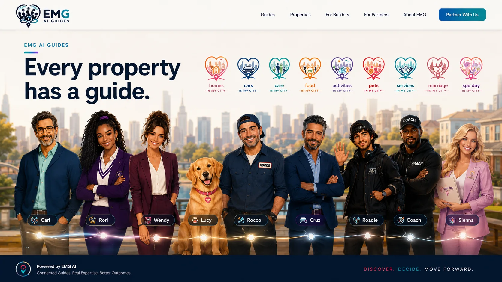
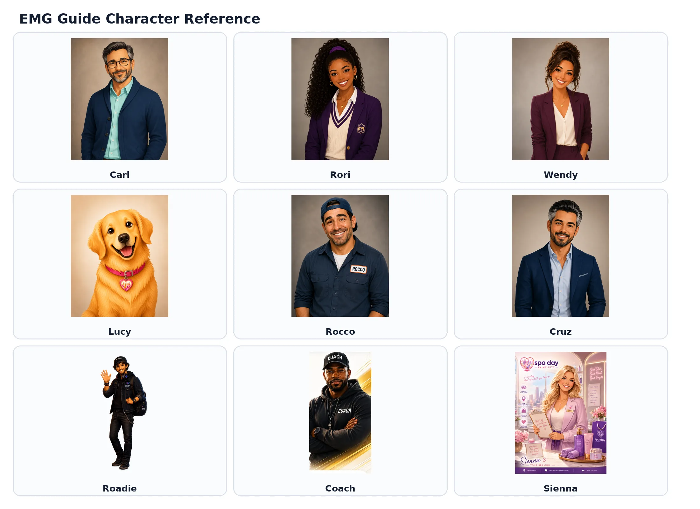

Every property has a guide.
Every EMG property has a recognizable guide built to make complex decisions feel clearer, more human, and easier to navigate.
They are not chatbots. They are the face of each community.
Each guide gives its community a consistent voice. They help people ask better questions, understand their options, and move forward—while helping EMG understand what people need before they convert.

The best AI experience does not try to sound intelligent. It helps someone feel less lost.
EMG Guides are designed around the pressure inside real decisions: too many options, unfamiliar language, incomplete information, and the fear of choosing poorly.
They organize the path, ask better questions, explain tradeoffs, and help people determine what matters before sending them toward a provider or next step. The interface may be powered by AI, but the standard is deeply human: clarity, honesty, and usefulness.
When guidance earns trust first, action becomes a natural continuation of the experience—not an interruption disguised as help.
A useful guide should understand that the right answer often changes by location, family, budget, timing, and circumstance.
Generic information can explain a category. Local context helps someone make a decision.
EMG Guides connect editorial standards, local discovery, structured information, and conversational assistance so people can move from broad uncertainty toward a practical next step.
Guidance should make the next step clearer.
Explore how an EMG Guide could organize a complex decision category or strengthen an existing property experience.